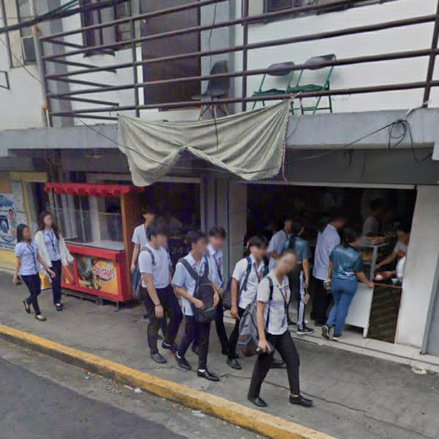

About Daddy's Sisig House

Daddy's Sisig House is a budget-friendly food place near TUP that offers tasty and filling meals for students. It is a good option for students who want an affordable meal without spending too much.
We recommend Daddy's Sisig House because sisig is one of its popular meal choices. It is a convenient place to visit when students are looking for an affordable and satisfying meal near TUP.
Place Details
| Address | Near Technological University of the Philippines |
|---|---|
| Opening Hours | Hours may vary |
| Price Range | ₱50 - ₱100 |
| Best Time to Visit | Lunch time |
| Recommended For | Students looking for affordable meals |